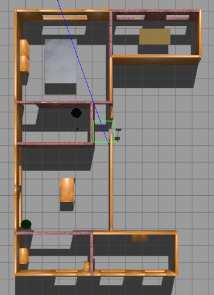
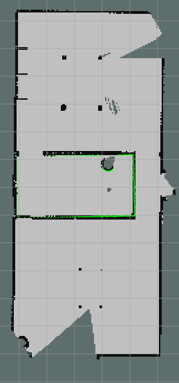

Here is a project on How to implement slam in ROS. This project explains how to interface with various sensors and actuators as well as how to develop your project step by step in the simulator called Gazebo. We assume basic familiarity with ROS.This blog is heavily influenced from Programming Robots with ROS book from Morgan Quigley which I highly recommend.
step 1:
create a wander bot that scans any obstacles around it and avoids it
step 1.1: mkdir -p ~/wanderbot_ws/src
step 1.2: cd ~wanderbot_ws/src
step 1.3: catkin_init_workspace
step 1.4: cd ~/wanderbot_ws/src
step 1.5: catkin_create_pkg wanderbot rospy geometry_msgs sensor_msgs
this would create a package in your catkin_ws called wanderbot. Inside the package notice two files
1.CMakeLists.txt : a starting point for the build script for this package
2.package.xml: a machine-readable description of the package, including details such as its name, description, author, license, and which other packages it depends on to build and run
Now inside the src of the package wanderbot write a python program that
has a publisher node to publish the cmd velocity to the wanderbot. The cmd velocity would be of type Twist
from geometry_msgs.msg import Twist cmd_vel_pub = rospy.Publisher('cmd_vel', Twist, queue_size=1)Here we publish to the topic cmd_vel messages of type Twist and queue size=1 tells rospy to buffer 1 outgoing msg. In case the node sending the messages is transmitting at a higher rate than the receiving node(s) can receive them, rospy will simply drop any messages beyond the queue_size
publish message into this topic cmd_vel at 10 hz per second so as to not to send too many msgs
rate = rospy.Rate(10) while not rospy.is_shutdown(): ..... rate.sleep()Messages of type Twist can be published that it then received by a subscriber node that run on the robot.
msg definition of Twist:
# This expresses velocity in free space broken into its linear and angular parts. Vector3 linear Vector3 angularso you can set a forward velocity of 0.5 as follows:
green_light_twist = Twist()
green_light_twist.linear.x = 0.5To scan for any obstacles we use the laser can on boarded on the turtle-bot robot. It gives a linear vector of ranges from the robot to the nearest obstacles in various directions
# Single scan from a planar laser range-finder Header header # timestamp in the header is the acquisition time of # the first ray in the scan. # # in frame frame_id, angles are measured around # the positive Z axis (counterclockwise, if Z is up) # with zero angle being forward along the x axis float32 angle_min # start angle of the scan [rad] float32 angle_max # end angle of the scan [rad] float32 angle_increment # angular distance between measurements [rad] float32 time_increment # time between measurements [seconds] - if your scanner # is moving, this will be used in interpolating position # of 3d points float32 scan_time # time between scans [seconds] float32 range_min # minimum range value [m] float32 range_max # maximum range value [m] float32[] ranges # range data [m] (Note: values < range_min or > range_max should be discarded) float32[] intensities # intensity data [device-specific units]. If your # device does not provide intensities, please leave # the array empty.
We can calculate the bearing as:
bearing = msg.angle_min + i * msg.angle_max / len(msg.ranges)
We can calculate the nearest obstacle directly in front of the robot by fetching the middle elements of the ranges
range_ahead = msg.ranges[len(msg.ranges)/2]
- Write a subscriber to the Laser Scan data we receive from turtle bot
from sensor_msgs.msg import LaserScan
def scan_callback(msg):
range_ahead = msg.ranges[len(msg.ranges)/2]
print "range ahead: %0.1f" % range_ahead
scan_sub = rospy.Subscriber('scan', LaserScan, scan_callback)next we can write a obstacle avoidance logic on basis of following psedo-code:
if range_ahead < 0.8: publisher send a twist of velocity 0 and non-zero angular velocity else: publisher send a twist of velocity non zeros and zero angular velocityYou can run it like
roslaunch turtlebot_gazebo turtlebot_world.launch chmod +x <your pythonfile>.py /<your pythonfile>.py cmd_vel:=cmd_vel_mux/input/teleop
Keyboard to Move your Robot
Create a node that read the keyboard input.Make a publisher that forwards the read keyboard into a topic called keys.
How to do it in code
import sys,select,tty,termios #get current attribute/setting of terminal old_attr = termios.tcgetattr(sys.stdin) #set the setting so as to read every character and not wait till full line tty.setcbreak(sys.stdin.fileno()) key_pub = rospy.Publisher('keys',String,queue_size=1) if select.select([sys.stdin],[],[],0)[0]==[sys.stdin]: key_pub.publish(sys.stdin.read(1)) #reset back to the original setting termios.tcsetattr(sys.stdin,termios.TCSADRAIN,old_attr)Another node that subscribe to the keys and publishes a twist
key_mapping = {'w':[0,1],'x':[0,-1],
'a':[-1,0],'d':[1,0],
's':[0,0]}
g_last_twist = None
def keys_cb(msg,twist_pub):
global g_last_twist
if len(msg.data) == 0 or not key_mapping.has_key(msg.data[0]):
return
vels = key_mapping[msg.data[0]]
g_last_twist.angular.z = vels[0]
g_last_twist.linear.x = vels[1]
rospy.Subscriber('keys',String,keys_cb,twist_pub)
# define publisher
twist_pub = rospy.Publisher('cmd_vel',Twist,queue_size=1)
twist_pub.publish(g_last_twist)Debug TIPS
To discover topic data : rostopic info cmd_vel
This will print information about the topic publishers and subscribers,as well as stating that the cmd_vel topic is of type geometry_msgs/Twist .
rosmsg show geometry_msgs/Twist
>>> geometry_msgs/Vector3 linear
float64 x
float64 y
float64 z
geometry_msgs/Vector3 angular
float64 x
float64 y
float64 z
To plot in real time : rqt_plot cmd_vel/linear/x cmd_vel/angular/z
Parameter Server in ROS
a parameter server is a generic key/value store. We can pass parameter from cmdline while starting the program
./keys_to_twist_parameterized.py _linear_scale:=0.5 _angular_scale:=0.4and then you can use fetch the parameters from inside the program using
if rospy.has_param('~linear_scale'):
g_vel_scales[1] = rospy.get_param('~linear_scale')It is a good idea to ramp up the velocity instead of passing +- a target velocity which can be done like
def ramped_vel(v_prev, v_target, t_prev, t_now, ramp_rate):
step = ramp_rate * (t_now - t_prev).to_sec()
sign = 1.0 if (v_target > v_prev) else -1.0
error = math.fabs(v_target - v_prev)
if error < step: # we can get there within this timestep-we're done.
return v_target
else:
return v_prev + sign * step # take a step toward the target
def ramped_twist(prev, target, t_prev, t_now, ramps):
tw = Twist()
tw.angular.z = ramped_vel(prev.angular.z, target.angular.z, t_prev,
t_now, ramps[0])
tw.linear.x = ramped_vel(prev.linear.x, target.linear.x, t_prev,
t_now, ramps[1])
return tw
def send_twist():
global g_last_twist_send_time, g_target_twist, g_last_twist,\
g_vel_scales, g_vel_ramps, g_twist_pub
t_now = rospy.Time.now()
g_last_twist = ramped_twist(g_last_twist, g_target_twist,
g_last_twist_send_time, t_now, g_vel_ramps)
g_last_twist_send_time = t_now
g_twist_pub.publish(g_last_twist)
To drive the Robot using keyboard
cd catkin_ws
source devel/setup.bash
#terminal 1
roslaunch turtlebot3_gazebo turtlebot3_world.launch
#terminal 2
python key_publisher.py
#terminal 3
python keys_to_twist.py Visualize using RVIZ
rviz stands for ROS visualization. It is a general purpose 3D visualization environment for robots,sensors and algorithm.
Few fun facts about rviz
rviz live in package also called rviz
all forms of data are attached to a frame of reference. camera on turtlebot is attached to a reference frame defined relative to the center of the turtlebot’s mobile base. odom is taken where robot is powered on.
Since all our data must be visualize wrt to a frame of reference.We must select this frame of reference in the global options/Fixed Frame
- Tf topic primer
-
We must publish our frame of references relation over time on this topic.rviz also uses this topic to finds different frames. Why do we need this? because
A robotic system typically has many 3D coordinate frames that change over time, such as a world frame, base frame, gripper frame, head frame, etc. tf keeps track of all these frames over time, and allows you to ask questions like:
Where was the head frame relative to the world frame, 5 seconds ago?
What is the pose of the object in my gripper relative to my base?
What is the current pose of the base frame in the map frame?
Add these line to your turtlebot 3 launch file to publish proper tf messages
<!-- Modified lines in the orgiginal package--> <node name="joint_state_publisher" pkg="joint_state_publisher" type="joint_state_publisher"> <param name="use_gui" value="TRUE" /> </node> <node name="robot_state_publisher" pkg="robot_state_publisher" type="robot_state_publisher" />
rviz has a no of panels and plugins that can be configured. after configuring,rviz can be saved , and loads automatically when you open it next time
you can add plugins like Image plugin to visualize what your camera see(you need to put the camera feed topic) or visualize
Building Maps of the World
building a map would be simple: you could take the objects detected by the sensors, transform them into some global coordinate frame (using the robot’s position and some geome‐try), and then record them in a map (in this global coordinate frame).
WRONG !!!
Because no sensor is perfect and robot does not know with full confidence how it is moving ( supposed the wheels slipped a little)
ROSBAG rosbag is a tool that lets us record messages and replay them later. why use them ? 1. debugging new algorithms, since it lets you present the same data to the algo‐ rithm over and over, which will help you isolate and fix bugs.
To record: >> rosbag record scan tf #saves in YYYY-MM-DD-HH-mm-ss.bag >>rosbag record -O foo.bag scan tf #saves in foo.bag >>rosbag record -o foo scan tf #saves in foo_2015-10-05-14-29-30.bag >> rosbag record -a to play the saved msgs >> rosbag play --clock foo.bag --clock flag causes rosbag to publish clock time which ll be important when we come to build our maps |
we ll build maps with the slam_gmapping node from the gmapping package. The slam_gmapping node uses an implementation of the GMapping algorithm. GMapping uses a Rao-Blackwellized particle filter to keep track of the likely positions of the robot, based on its sensor data and the parts of the map that have already been built.
We’re going to drive the robot around and save the sensor data to a file using rosbag . We’re then going to replay this sensor data and use slam_gmapping to build a map for us.
to create a map,run the following
#terminal 1 # start the turtle bot in the world
roslaunch turtlebot3_gazebo turtlebot3_house.launch
#terminal 2: start the gmapping node. Run this either directly or record the data first in a ros bag and then run it
roslaunch turtlebot3_slam turtlebot3_slam.launch slam_methods:=gmapping
#terminal 3 : run rhe robot
roslaunch turtlebot3_teleop turtlebot3_teleop_key.launch
